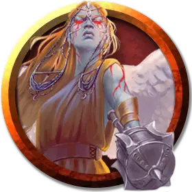

Перигей
Perigee
Средний Небожитель, законно-добрый, именной НИП

Класс Доспеха 17 (природный доспех)
Хиты 136 (16к8 + 64)
Скорость 30 футов, летая 90 футов
| мод | спас | ||
|---|---|---|---|
| СИЛ | 18 | +4 | +4 |
| ЛОВ | 18 | +4 | +4 |
| ТЕЛ | 18 | +4 | +4 |
| мод | спас | ||
|---|---|---|---|
| ИНТ | 17 | +3 | +3 |
| МДР | 20 | +5 | +9 |
| ХАР | 20 | +5 | +9 |
Навыки Восприятие +9, Проницательность +9
Сопротивление урону излучение; дробящий, колющий, рубящий от немагических атак
Иммунитет к состояниям очарование, истощение, испуг
Чувства тёмное зрение 120 футов, пассивное Восприятие 19
Языки Все, Телепатия 120 фт.
Опасность 10 (5900 опыта)
Бонус мастерства +4
Особенности
Оружие ангела. Атаки оружием дэва являются магическими. Если дэв попадает любым оружием, оно причиняет дополнительный урон излучением 4к8 (уже включено в атаку).
Врождённое колдовство. Базовой характеристикой дэва является Харизма (Сл спасброска от заклинания 17). Дэв может накладывать следующие заклинания, нуждаясь только в вербальных компонентах:
• Неограниченно: обнаружение зла и добра [detect evil and good];
• 1/день каждое: общение [commune], оживление [raise dead].
Сопротивление магии. Дэв совершает с преимуществом спасброски от заклинаний и прочих магических эффектов.
Действия
Мультиатака. Дэв совершает две рукопашные атаки.
Булава. Рукопашная атака оружием: +8 к попаданию, досягаемость 5 футов, одна цель. Попадание: Дробящий урон 7 (1к6 + 4) плюс урон излучением 18 (4к8).
Целебное касание (3/день). Дэв прикасается к другому существу. Цель магическим образом восстанавливает 20 (4к8 + 2) хитов и избавляется от проклятий, болезней, отравлений, слепоты и глухоты.
Смена формы. Дэв магическим образом превращается в гуманоида или зверя, чей показатель опасности не превышает его собственный, или принимает свой истинный облик. Если дэв умирает, он принимает свой истинный облик. Все снаряжение, которое он несет или носит, сливается с новым обликом или используется им (на выбор дэва).
В новом облике дэв сохраняет игровую статистику и способность говорить, но КД, режимы перемещения, Сила, Ловкость и специальные чувства заменяются теми, что есть у нового облика, и он получает все элементы статистики и умения (кроме классовых умений, легендарных действий и действий логова), которые есть у нового облика, но отсутствуют у него.